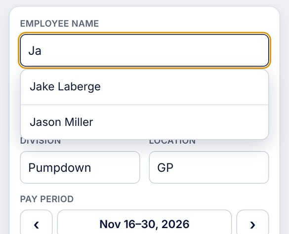
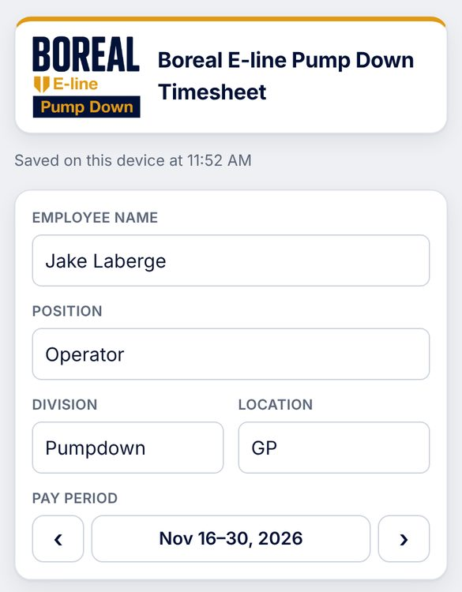
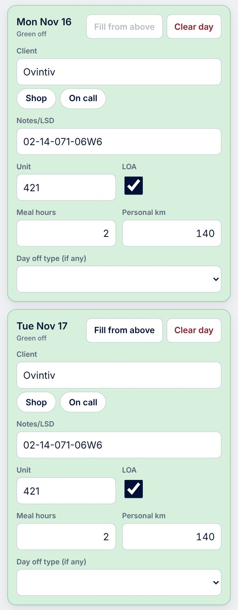
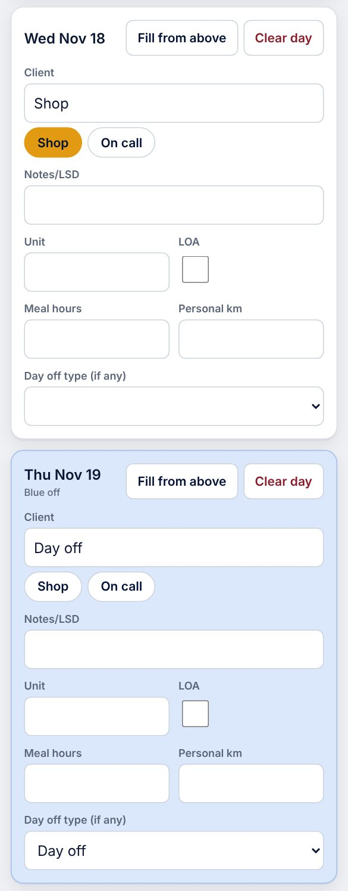
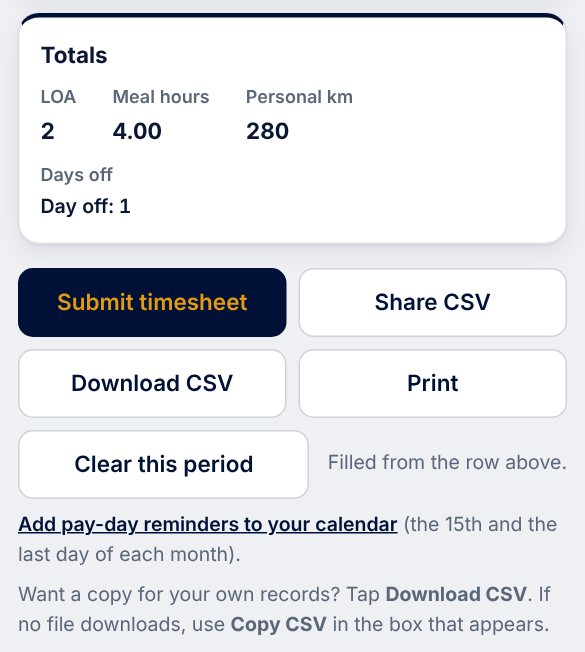

How to use the Boreal Timesheet
Fill in your days as you go, then submit at the end of each pay period. No account or password is needed, and it works with no signal.
1. Open the timesheet
Go to borealelinepd.github.io/timesheet on your phone or computer.
Add it to your home screen so it opens like an app and works with no signal. On a phone, a box at the top of the page offers this: tap Show me how and follow the steps.
- iPhone: open the link in Safari, tap the Share button (square with an arrow), then Add to Home Screen.
- Android: in Chrome, tap the three dots, then Install app or Add to Home screen.
Open it once with signal. After that it works anywhere, even with no service.
2. Your details and pay period
Start typing your name and pick it from the list. Your position, division and location fill in for you. If your name isn't on the list, tell your manager.

The page opens on the current pay period (the 1st to the 15th, or the 16th to the end of the month). Use the ‹ › arrows to move to another period. Go to current period brings you back.

Your details are remembered on your phone, so you only do this once.
3. Fill in each day
Each day of the pay period has its own card. Fill in what applies and leave the rest blank.
| Field | What to enter |
|---|---|
| Client | The client you worked for. In the shop: tap Shop. On shift on a weekend but not called out: tap On call. |
| Notes/LSD | The LSD or location, plus any notes. |
| Unit | Your unit number. |
| LOA | Tick if you got LOA that day. |
| Meal hours | Meal hours for the day (up to 24). |
| Personal km | Personal km driven that day. |
| Day off type | Only on days off: Day off, Vacation/time off or Unpaid day taken. If you worked a scheduled day off, pick Day off worked. Leave blank on regular workdays. |
Fill from above copies everything from the day before. Use it when today is the same as yesterday, then change anything that's different. On a computer, Ctrl+D copies just the box you're in.

Days off fill in Client for you. Picking Day off, Vacation/time off or Unpaid day taken puts that text in Client, so Client is never blank. Day off worked leaves Client for you to fill in.
Changed your mind? Shop and On call mean you worked, so tapping one removes a Day off type. Picking a Day off type replaces Shop or On call in Client. Day off worked goes together with Shop or On call. If a day gets mixed up, use Clear day and start that day again.
Shaded cards are each crew's scheduled days off (Blue, Yellow or Green). The crew is written under the date.

4. Save, submit and fix mistakes
It saves as you type. Everything stays on your phone, so you can fill in a day at a time. The line under the logo shows when it last saved.
Totals at the bottom add up your LOA, meal hours, km and days off for the period.

Submit at the end of the pay period (the 15th and the last day of the month):
- Check your days and totals.
- Tap Submit timesheet.
- Wait for the message that says it was submitted.
No signal? Tap Submit anyway. The timesheet waits on your phone and sends by itself when you're back online. Keep the page open until it says submitted.
Made a mistake? That's fine. Fix the day and tap Submit timesheet again. The corrected days replace what you sent before, so there's nothing else to do, as long as the timesheet hasn't gone to payroll yet.
Already sent to payroll? Once payroll has the timesheet, those days are locked and the page will tell you it can't change them. In that case, make your correction on the timesheet, tap Share CSV, and email it to pddispatch@bonnettsenergy.com so they can fix it with payroll. Mention in the email what you changed.
Other buttons:
- Share CSV: opens your phone's share menu so you can send the timesheet from your own email. Use it for corrections after payroll has it.
- Download CSV: saves a copy for your own records.
- Print: a paper copy.
- Clear day (on each day): empties just that day. Tap it, then tap Tap again to confirm.
- Clear this period: wipes the period on your phone. Tap twice to confirm.
- Add pay-day reminders to your calendar: reminders on the 15th and the last day of each month.
5. Quick tips
- Fill it in daily. It takes a minute and nothing gets forgotten by pay day.
- Use the same phone. Your saved days live on that phone. A different phone or browser starts blank.
- A box turns red? That value is out of range (meal hours over 24, or km over 10,000). Fix it and submit again.
- "Pick your name from the list" means the name was typed but not chosen. Tap your name in the list.
- Page looks old? Open it once with signal. It updates itself the next time you open it.